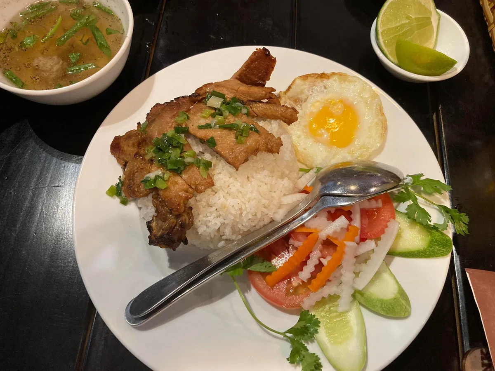
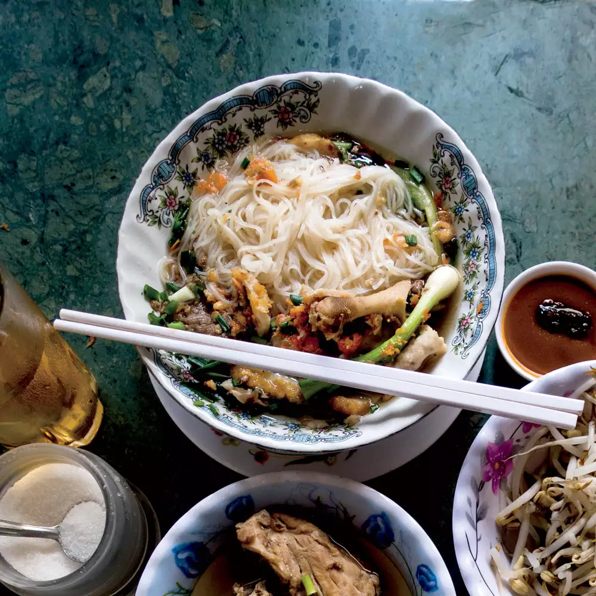
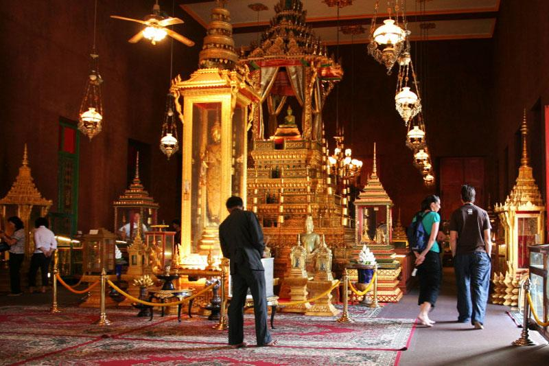
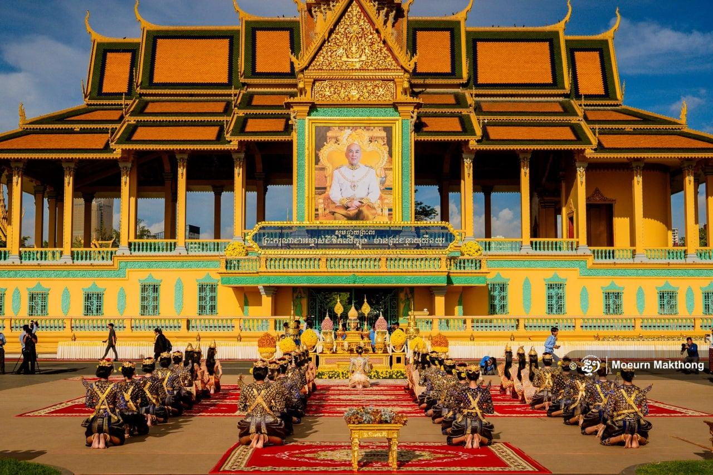

Food and Culture
Food

Phnom Penh Chicken Rice
A beloved local dish in Cambodia’s capital, Phnom Penh chicken rice features tender, flavorful chicken served with fragrant steamed rice cooked with aromatic spices and chicken broth. Often accompanied by fresh cucumber, herbs, pickled vegetables, and a savory dipping sauce, the dish offers a comforting balance of rich, savory, and refreshing flavors. Popular among locals and visitors alike, it represents the simple yet delicious street food culture found throughout Phnom Penh.

Kuy Teav
A traditional Cambodian noodle soup and one of the most popular breakfast dishes in Phnom Penh, Kuy Teav is made with smooth rice noodles served in a rich, aromatic broth. The soup is commonly topped with sliced pork, beef, seafood, or meatballs, along with fresh herbs, bean sprouts, lime, and chili for added flavor. Known for its comforting taste and delicate balance of savory and fresh ingredients, Kuy Teav reflects Cambodia’s everyday food culture and is a must-try dish for visitors exploring the capital.
Culture

Khmer Art and Craftsmanship
The palace displays Cambodia’s rich artistic heritage through detailed murals, sculptures, carvings, and traditional decorations. The craftsmanship reflects the skills of Khmer artists and the country’s long history of architectural excellence.
Explore More
Symbol of the Cambodian Monarchy
The Royal Palace represents the history, identity, and continuity of Cambodia’s royal institution. As the official residence of the King of Cambodia, it remains an important place for royal ceremonies, national events, and traditional celebrations.
Explore More